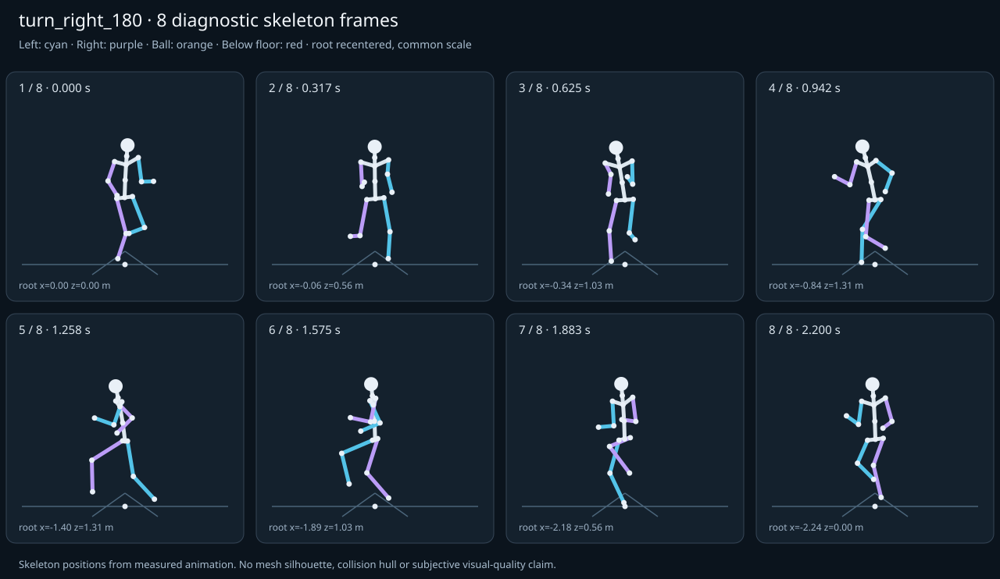

כל הקליפים · תצוגת התנועה · JSON המקור
ציון 90 · כיסוי 100%
הסוליות נמדדות בתרחיש תנועה חיצוני מוצהר; Root בנכס נשאר קבוע. הרציפות משתמשת בפוזה המקומית.

| מדד | מצב | ערך | ציון | ראיות |
|---|---|---|---|---|
| החלקת רגליים | ירוק | 0.000341 | 99.32 | ראיות מקוריות{
"coordinateSpace": "native GLB plus explicitly declared external actor position and heading, applied once",
"supportSource": "declared",
"windows": 7,
"samples": 223,
"maxDriftMeters": 0.000576,
"p95SpeedMetersPerSecond": 0.042487,
"worst": {
"bone": "LeftFoot",
"t": 1.25,
"start": 0.966667,
"end": 1.26,
"driftMeters": 0.000576
}
} |
| חדירה לרצפה | ירוק | 0 | 100 | ראיות מקוריות{
"samples": 5420,
"floorY": 0,
"probeKind": "declared sole probes plus skeletal joint centers (no mesh surfaces)",
"maxDepthMeters": 0,
"worst": {
"t": 0,
"bone": "LeftFoot",
"depthMeters": 0,
"y": 0.251881
}
} |
| קפיצות פוזה | צהוב | 1.05644 | 78.87 | ראיות מקוריות{
"adjacentPairs": 270,
"observations": 4590,
"maxDegrees60Hz": 9.775221,
"maxMarkerStepHeight60Hz": 0.042258,
"maxRootStepHeight60Hz": 0.017751,
"worst": {
"ratio": 1.0564398428818256,
"t": 0.766667,
"previousTime": 0.758333,
"bone": "LeftFoot",
"markerStepHeight60Hz": 0.042258,
"degrees60Hz": 4.218202
}
} |
| חריגות אנטומיות | ירוק | 0 | 100 | ראיות מקוריות{
"testedFrames": 271,
"affectedFrames": 0,
"checks": 4607,
"maxLimbFlexionDegrees": 113.621906,
"maxRelativeSegmentLengthChange": 0,
"hingeDirectionChecked": true,
"axialTwistChecked": false,
"violations": []
} |
| מגע בכדור | לא חל | — | — | ראיות מקוריות{} |
| כניסה ויציאה מול המתנה | צהוב | 1.83086 | 67.54 | ראיות מקוריות{
"entry": {
"ratio": 1.8308597276883278,
"t": 0,
"idleTime": 3.833333,
"markers": 17,
"rmsPositionHeight": 0.073234,
"rmsRotationDegrees": 27.191438,
"rmsVelocityHeightPerSecond": 0.974194,
"velocityEvaluated": true
},
"exit": {
"ratio": 1.811389435811367,
"t": 2.2,
"idleTime": 3.8,
"markers": 17,
"rmsPositionHeight": 0.072456,
"rmsRotationDegrees": 27.408191,
"rmsVelocityHeightPerSecond": 1.001629,
"velocityEvaluated": true
},
"worstEndpoint": "entry",
"alignment": "horizontal root translation; raw asset poses used when provided"
} |
| מהירות גוף מול צעדים | ירוק | 0.191507 | 80.85 | ראיות מקוריות{
"rootSource": "sampled presented root",
"rootSpeedMetersPerSecond": 1.799989,
"observedRootSpeedMetersPerSecond": 1.799989,
"referenceRootSpeedMetersPerSecond": 1.799989,
"supportSource": "declared",
"backwardSweepSpeedMetersPerSecond": 1.455278,
"cadenceStepsPerSecond": 2.72727,
"impliedStrideMeters": 1.067205,
"rootStrideMeters": 1.319993,
"supportSweeps": [
{
"bone": "RightFoot",
"start": 0.6,
"end": 0.893333,
"duration": 0.293333,
"sweepMeters": 0.439395,
"speedMetersPerSecond": 1.497937
},
{
"bone": "RightFoot",
"start": 1.333333,
"end": 1.626667,
"duration": 0.293333,
"sweepMeters": 0.426882,
"speedMetersPerSecond": 1.455278
},
{
"bone": "LeftFoot",
"start": 0.233333,
"end": 0.526667,
"duration": 0.293333,
"sweepMeters": 0.204677,
"speedMetersPerSecond": 0.697762
},
{
"bone": "LeftFoot",
"start": 0.966667,
"end": 1.26,
"duration": 0.293333,
"sweepMeters": 0.523088,
"speedMetersPerSecond": 1.783256
},
{
"bone": "LeftFoot",
"start": 1.7,
"end": 1.993333,
"duration": 0.293333,
"sweepMeters": 0.184342,
"speedMetersPerSecond": 0.62844
}
]
} |
| סימטריה | ירוק | 0 | 100 | ראיות מקוריות{
"mode": "mirrored clip pair",
"modeSource": "declared",
"structuralMismatch": 0,
"segments": [
{
"segment": "Arm-ForeArm",
"mismatch": 0
},
{
"segment": "ForeArm-Hand",
"mismatch": 0
},
{
"segment": "UpLeg-Leg",
"mismatch": 0
},
{
"segment": "Leg-Foot",
"mismatch": 0
}
],
"motionRmsHeight": 0,
"worstMotion": {
"t": 1.475,
"errorHeight": 0
},
"bilateralPoseRmsHeightUnscored": 0.190222,
"note": "One-sided authored actions are checked for structural symmetry only."
} |